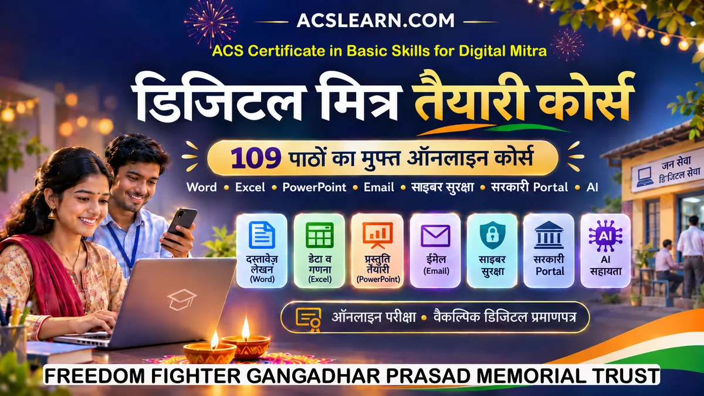

कोर्स › ACS डिजिटल मित्र: बुनियादी कौशल में प्रमाणपत्र

ACS डिजिटल मित्र: बुनियादी कौशल में प्रमाणपत्र
ACS Certificate in Basic Skills for Digital Mitra
गाँव के बच्चे से डिजिटल मित्र तक: Word (वर्ड), Excel (एक्सेल), UPI (यूपीआई) और AI (एआई) की पूरी तैयारी, कक्षा-6 की हिंदी में।
📖 109 पाठ: पूरी तरह मुफ़्त📝 120-प्रश्न online परीक्षा: मुफ़्त📜 प्रमाणपत्र ₹125: मर्ज़ी हो तोयह कोर्स किसके लिए है
यह कोर्स उनके लिए है जो कंप्यूटर के बुनियादी हुनर (Word, Excel, PowerPoint, Email, फ़ाइल-सँभाल, ऑनलाइन सुरक्षा, सरकारी portal पर काम और AI की समझ) सीखकर काम-काज के लायक़ बनना चाहते हैं। पढ़ने के लिए कक्षा-6 तक की हिंदी काफ़ी है। कोई भी पाठ खोलिए, पढ़िए, और हर पाठ के अंत के 5 सवालों से ख़ुद को जाँचते चलिए।
साफ़ बात: यह ACS का अपना तैयारी-कोर्स है। यह बिहार सरकार के आधिकारिक कोर्स "KYP (कुशल युवा कार्यक्रम) डिजिटल मित्र" या BSDM का कोर्स नहीं है, और इससे कोई सरकारी प्रमाणपत्र नहीं मिलता। यह उस पढ़ाई की मज़बूत तैयारी कराता है।
📜 प्रमाणपत्र कैसा मिलेगा: नमूना देखिए
पूरा कोर्स पढ़कर ऑनलाइन परीक्षा पास करने पर ऐसा डिजिटल प्रमाणपत्र मिलेगा। इस पर आपका नाम, अंक, तारीख़ और जाँच (verify) के लिए अपना अलग नंबर व QR होगा। दुनिया में कहीं से भी असली-नक़ली जाँचा जा सकेगा। नीचे सिर्फ़ नमूना है।
ध्यान: ऊपर वाला चित्र सिर्फ़ नमूना (sample) है। यह किसी का असली प्रमाणपत्र नहीं है। असली प्रमाणपत्र परीक्षा पास करने पर ही बनता है।
💰 फीस की साफ़ सूची
| क्या | फीस |
|---|---|
| सभी 109 पाठ online पढ़ना + हर पाठ के 5 अभ्यास-सवाल | ₹0: पूरी तरह मुफ़्त, बिना login भी |
| ऑनलाइन परीक्षा (120 प्रश्न, 10 चांस तक) | ₹0: मुफ़्त (ACS-ID से login करके) |
| डिजिटल प्रमाणपत्र-PDF (ऊपर जैसा, QR-जाँच सहित), परीक्षा पास करने के बाद | ₹125: मर्ज़ी हो तो लें, न लें तो पढ़ाई व परीक्षा फिर भी मुफ़्त |
| केंद्र पर offline प्रशिक्षण (practical) | Paid: राशि केंद्र की सूचना से (ACS-न्यूनतम नियम लागू) |
| KYP (कुशल युवा कार्यक्रम) की सरकारी परीक्षा/कोर्स फीस | ACS तय नहीं करता। ताज़ा जानकारी BSDM के आधिकारिक portal पर देखें |
नियम सीधा है: पढ़ना सबके लिए मुफ़्त। पैसा सिर्फ़ तब, जब आप प्रमाणपत्र-PDF या केंद्र की सेवा लें।
खंड-1: परिचय व बुनियाद
- पाठ 1.1: डिजिटल मित्र कौन है: काम, कमाई और भविष्य की सीढ़ी11-13 मिनट
- पाठ 1.2: Data Entry क्या है: हाथ से, मशीन से, मिला-जुला11-13 मिनट
- पाठ 1.3: AI से पहली पहचान: OCR, ICR, NLP, RPA, ML आसान भाषा में11-13 मिनट
- पाठ 1.4: कंप्यूटर के अंग: screen से memory तक, आसान भाषा में11-13 मिनट
- पाठ 1.5: कंप्यूटर और फ़ोन चलाना: चालू-बंद, Desktop, Icon, App11-13 मिनट
- पाठ 1.6: Typing की नींव: उँगलियाँ, गति और शुद्धता11-13 मिनट
- पाठ 1.7: ग्राहक से जानकारी लेने की योजना: क्या पूछें, कैसे रखें11-13 मिनट
- पाठ 1.8: KYP डिजिटल मित्र का पूरा रास्ता: पात्रता, उम्र, आगे की सीढ़ी11-13 मिनट
यह खंड पूरा ✅
खंड-2: Word
- पाठ 2.1: MS Word में नया दस्तावेज़ बनाना और सहेजना सीखें11-13 मिनट
- पाठ 2.2: Word में लिखना-सुधारना: Copy, Paste, Find और Replace11-13 मिनट
- पाठ 2.3: Word में Text सजाना: Bold, Italic, Font, रंग और आकार11-13 मिनट
- पाठ 2.4: Word में Paragraph सँवारना: Alignment, Spacing और Indent11-13 मिनट
- पाठ 2.5: Word में Bullets व Numbering: क़ायदे की सूची11-13 मिनट
- पाठ 2.6: Word में Page Layout: हाशिया, दिशा और काग़ज़ का आकार11-13 मिनट
- पाठ 2.7: Word में चित्र जोड़ना: Insert, आकार और Text-Wrap11-13 मिनट
- पाठ 2.8: Word में Shapes व SmartArt: आकृतियों से समझाना11-13 मिनट
- पाठ 2.9: Word में Table: पंक्ति, स्तंभ, Merge और सजावट11-13 मिनट
- पाठ 2.10: Word में Header-Footer व Page Number: हर पन्ने की पहचान11-13 मिनट
- पाठ 2.11: Word में Styles व Templates: एक जगह बदलो, सब बदले11-13 मिनट
- पाठ 2.12: Word में Spelling-Grammar जाँच: लकीरों की भाषा11-13 मिनट
- पाठ 2.13: Word से Print व PDF: काग़ज़ और पक्की Digital प्रति11-13 मिनट
- पाठ 2.14: Word में Mail Merge: एक चिट्ठी, सौ नाम11-13 मिनट
- पाठ 2.15: Word में AI सहारा: मसौदा मशीन से, ज़िम्मेदारी अपनी11-13 मिनट
- पाठ 2.16: Word की आम दिक़्क़तें व Google Docs: मुफ़्त विकल्प11-13 मिनट
यह खंड पूरा ✅
खंड-3: Excel
- पाठ 3.1: Excel खोलना: Worksheet, Cell, Data और Save11-13 मिनट
- पाठ 3.2: Data के प्रकार और Cell-सजावट11-13 मिनट
- पाठ 3.3: Row-Column का खेल और कई Sheets11-13 मिनट
- पाठ 3.4: Excel का Page Setup और Print11-13 मिनट
- पाठ 3.5: Sort: Data को क्रम में छाँटना11-13 मिनट
- पाठ 3.6: Filter: Data छानना11-13 मिनट
- पाठ 3.7: सूत्र: Excel से जोड़, घटाव, गुणा, भाग11-13 मिनट
- पाठ 3.8: Functions-1: SUM, AVERAGE, MIN, MAX, COUNT11-13 मिनट
- पाठ 3.9: Functions-2: IF, COUNTIF, TODAY11-13 मिनट
- पाठ 3.10: Chart बनाना: Bar, Line, Pie11-13 मिनट
- पाठ 3.11: Chart सजाना और पढ़ना11-13 मिनट
- पाठ 3.12: Pivot Table: पहला परिचय11-13 मिनट
- पाठ 3.13: Pivot Chart और रिपोर्ट11-13 मिनट
- पाठ 3.14: Pivot की आम ग़लतियाँ और सुधार11-13 मिनट
- पाठ 3.15: MIS Report: Excel से बनाना11-13 मिनट
- पाठ 3.16: AI-सुझाव: Data-सफ़ाई, चित्रण, Pivot-सिफ़ारिश11-13 मिनट
यह खंड पूरा ✅
खंड-4: PowerPoint
- पाठ 4.1: PowerPoint: खोलना, बनाना, सहेजना11-13 मिनट
- पाठ 4.2: Slide जोड़ना, Layout, Text11-13 मिनट
- पाठ 4.3: Slide का Text सजाना: साफ़ व असरदार11-13 मिनट
- पाठ 4.4: Theme व Template11-13 मिनट
- पाठ 4.5: Slide में चित्र, Video, आवाज़, 3D, Chart11-13 मिनट
- पाठ 4.6: Animation: चीज़ों में जान11-13 मिनट
- पाठ 4.7: Transition: Slide-से-Slide चाल11-13 मिनट
- पाठ 4.8: Slideshow चलाना11-13 मिनट
- पाठ 4.9: Presenter View: वक्ता का गुप्त परदा11-13 मिनट
- पाठ 4.10: अच्छी Presentation के 10 नियम + Google Slides11-13 मिनट
यह खंड पूरा ✅
खंड-5: फ़ाइल, Email व Scanner
- पाठ 5.1: File व Folder: बनाना, नाम, व्यवस्था11-13 मिनट
- पाठ 5.2: Scanner व OCR: काग़ज़ से Digital11-13 मिनट
- पाठ 5.3: File का रूप बदलना11-13 मिनट
- पाठ 5.4: Cloud Storage: Google Drive11-13 मिनट
- पाठ 5.5: Email की नींव: लिखना, भेजना, सुरक्षा11-13 मिनट
- पाठ 5.6: Inbox की व्यवस्था: Label व AI-छँटाई11-13 मिनट
- पाठ 5.7: ज़रूरी Email का Archive व खोज11-13 मिनट
- पाठ 5.8: Data की छँटाई-सफ़ाई (Curation)11-13 मिनट
- पाठ 5.9: Backup व Recovery11-13 मिनट
- पाठ 5.10: Computer धीमा हो तो11-13 मिनट
- पाठ 5.11: Printer व आम तकनीकी दिक़्क़तें11-13 मिनट
- पाठ 5.12: समस्या आगे बढ़ाना (Escalate)11-13 मिनट
- पाठ 5.13: Device Update रखना11-13 मिनट
- पाठ 5.14: LLM से पहली जान-पहचान11-13 मिनट
यह खंड पूरा ✅
खंड-6: सुरक्षा व निजता
- पाठ 6.1: Cyber Hygiene: digital सफ़ाई के रोज़ के नियम11-13 मिनट
- पाठ 6.2: ख़तरे पहचानो: पहचान व बचाव11-13 मिनट
- पाठ 6.3: मज़बूत Password की कला11-13 मिनट
- पाठ 6.4: Password Manager: चाबियों का घर11-13 मिनट
- पाठ 6.5: 2FA: दो-ताला सुरक्षा11-13 मिनट
- पाठ 6.6: Encryption: ताले की सरल समझ11-13 मिनट
- पाठ 6.7: software update = सुरक्षा11-13 मिनट
- पाठ 6.8: access control: किसे कितना अधिकार11-13 मिनट
- पाठ 6.9: data privacy: DPDP की सरल समझ11-13 मिनट
- पाठ 6.10: संस्था के नियम व protocol मानना11-13 मिनट
- पाठ 6.11: सुरक्षित भुगतान व लेन-देन के नियम11-13 मिनट
- पाठ 6.12: ग्राहक-data की रक्षा: व्यवहार के नियम11-13 मिनट
यह खंड पूरा ✅
खंड-7: ग्राहक-सेवा व सरकारी portal
- पाठ 7.1: ग्राहक-सेवा की भाषा: सुनना, बोलना, धैर्य11-13 मिनट
- पाठ 7.2: ग्राहक-record रखना: काम का हिसाब11-13 मिनट
- पाठ 7.3: Aadhaar के काम: self-service की समझ (mock)11-13 मिनट
- पाठ 7.4: PAN के काम: online सुधार (mock)11-13 मिनट
- पाठ 7.5: सरकारी योजनाएँ: खोजना व समझाना11-13 मिनट
- पाठ 7.6: online form भरना: परीक्षा व admission (mock)11-13 मिनट
- पाठ 7.7: passport का online आवेदन (mock)11-13 मिनट
- पाठ 7.8: net banking: registration की समझ (mock)11-13 मिनट
- पाठ 7.9: UPI भुगतान: भेजना, लेना, सावधानी (mock)11-13 मिनट
- पाठ 7.10: ticket booking: IRCTC की समझ (mock)11-13 मिनट
- पाठ 7.11: online course में दाख़िला: ख़ुद सीखते रहना11-13 मिनट
- पाठ 7.12: certificate upload व portal के काम11-13 मिनट
यह खंड पूरा ✅
खंड-8: AI की समझ
- पाठ 8.1: AI से पहली मुलाक़ात: chat-सहायक की समझ11-13 मिनट
- पाठ 8.2: prompt लिखने की कला: साफ़ पूछो, सही पाओ11-13 मिनट
- पाठ 8.3: AI से email व चिट्ठी draft: मसौदा AI का, मुहर तुम्हारी11-13 मिनट
- पाठ 8.4: AI से सारांश व content बनाना: लंबा छोटा, कच्चा पक्का11-13 मिनट
- पाठ 8.5: AI के जवाब की जाँच व सुधार: आत्मविश्वासी झूठ पकड़ना11-13 मिनट
- पाठ 8.6: AI का नैतिक व सुरक्षित उपयोग: bias, गोपनीयता11-13 मिनट
- पाठ 8.7: data annotation क्या है: AI की पाठशाला11-13 मिनट
- पाठ 8.8: annotation के औज़ार: चित्र, text, आवाज़, video पर label11-13 मिनट
- पाठ 8.9: annotation में शुद्धता, एकरूपता व त्रुटि-सुधार11-13 मिनट
- पाठ 8.10: AI-युग में डिजिटल मित्र का भविष्य11-13 मिनट
यह खंड पूरा ✅
खंड-9: रोज़गार-योग्यता
- पाठ 9.1: employability skills: परिचय11-13 मिनट
- पाठ 9.2: संविधान-मूल्य व नागरिकता: अधिकार व शिकायत-रास्ते11-13 मिनट
- पाठ 9.3: 21वीं सदी का पेशेवर बनना: व्यवहार, hygiene-grooming11-13 मिनट
- पाठ 9.4: बुनियादी English: काम-भर की11-13 मिनट
- पाठ 9.5: communication skills: बोलना, लिखना, टीम-काम11-13 मिनट
- पाठ 9.6: विविधता व समावेश11-13 मिनट
- पाठ 9.7: पैसे व क़ानून की समझ: आमदनी, ख़र्च, बचत11-13 मिनट
- पाठ 9.8: उद्यमिता: अवसर-पहचान, अपना काम खड़ा करना11-13 मिनट
- पाठ 9.9: ग्राहक-सेवा का व्यवहार: दोहराव-सार11-13 मिनट
- पाठ 9.10: apprenticeship व नौकरी की तैयारी: resume, job-खोज, interview11-13 मिनट
- पाठ 9.11: Essential Digital Skills: परीक्षा-दर्पण11-13 मिनट
यह खंड पूरा ✅
आगे के हिस्से
पूरा कोर्स 109 पाठों का है, 9 खंडों में। हर पाठ ऊपर की सूची से खुलता है।